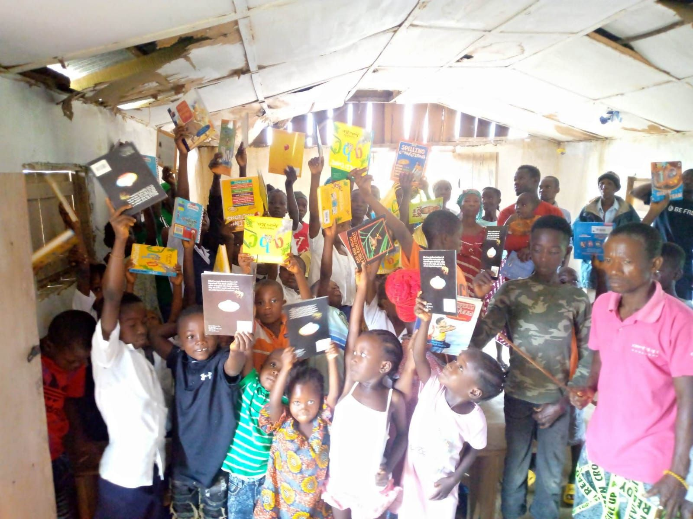

Professional Certificate Programs
Community health, safety, counseling and ethics for practitioners and community workers.
View programA 10-week program delivered through 60% online and 40% in-person instruction.
About 60% of the program is studied online in TIME Learning, where your lecturers publish lessons, quizzes, assignments and class dates. The other 40% is taught in person.
Open TIME Learning, register as a student and verify your email address with the code we send you.
Choose the courses you want to join. Your request shows as pending until it is reviewed.
TIME reviews your request and approves your enrolment. Use Check approval in your account to see the decision.
Open each course to find lessons, quizzes, assignments, class dates and announcements from your lecturers.
Yes. TIME Inc. is an accredited supplementary teacher-training institution under the Bureau of Teacher Education, Ministry of Education (MoE), Liberia, and has been registered with the Government of Liberia since January 2021.
Please contact admissions for the fee and payment arrangements for the Special Education Support Training.
You study the online part in TIME Learning: create a student account, verify your email address and request enrolment. Once TIME approves your enrolment, your lessons, quizzes, assignments and class schedule appear in your account. The in-person classes take place with your lecturers.
Contact admissions for the start date of the next Special Education Support Training cohort.

Registration is ongoing. Talk to our admissions team about fees, schedules and the next start date.